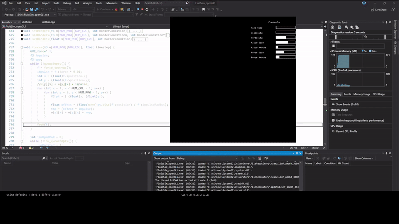

Fluid Simulator
This Fluid Simulator was written as part of a Parallel Computing class to identify speedup through parallelism. The GUI and keyboard input allows user to control parameters to alter behaviour of simulation.
Based on the GPU Gems book using C++, CUDA, Visual Studio and FreeGLUT using an NVIDIA graphics card.
Speedup of the parallelized version was overall 14.3x faster than the sequential version.